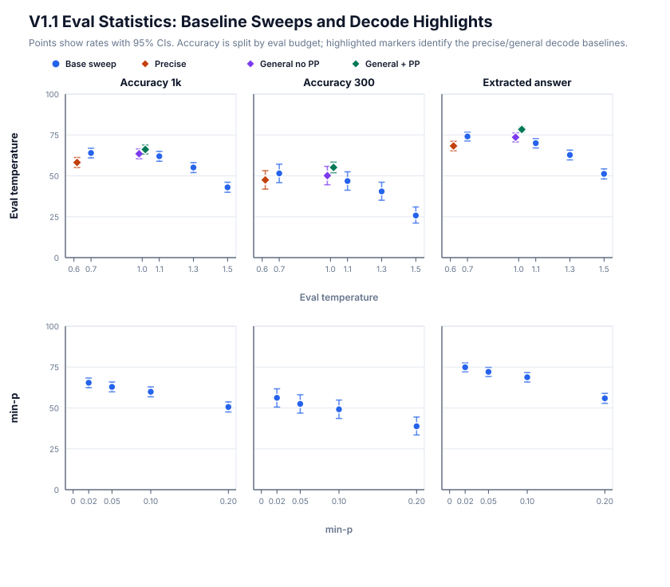

Self-distillation on math: baselines
Last time we talked about the data we're going to use to evaluate our Qwen3.5-4B model on competitive math. Now that we have this, we can get into baselines.
A note on the validation set
Before we get started though, I have to call out one issue on the validation data. Recall that we are building a ~1k validation set from various sources; these sources have different difficulty and contamination levels. Further, the 1k set is really only needed for fine evals and to detect smaller effects; for comparing checkpoints within a single run and ablations where we want to see a directional signal, 300 prompts is enough. The problem is that when you combine both of these facts, you can't interpret a 300-row eval the same way you would interpret a 1k-row eval: the 300-row set is harder, so your partial accuracy will be worse. I only realized this quite some time after running several experiments, which is a bit annoying because we're stuck with this now. This explains why below I report 300-budget and 1k-budget accuracies, and why they are so different.
Metrics
Beyond simple accuracy, there are a couple of additional metrics to care about. In particular in training they can be useful to understand if we are making progress or not. They center around how well the model follows the instructions and emits an answer. Qwen3.5-4B is not explicitly mentioned as falling into thinking loops like its smaller cousins 2B and 0.8B, but it can nevertheless think for such a long time that it hits the generation cap. Therefore, it's useful to track the following:
- Think-close rate: how often did the model stop thinking and start producing some kind of response.
- Boxed-answer rate: how often did the model produce some kind of extractable answer in
\boxed{}(as instructed) - Length-stop rate: how often did the model run up to the generation cap.
Note that these metrics also depend on the generation cap. When I started the project, I tried values around 16k and 32k, but these were too short: I ended up with a set of responses that was either correct, or cut off. At 48k, the length-stop rate is still high at around 12%, but we do start seeing cases where the model finishes naturally and produces an extractable wrong answer.
Baseline definitions
Now that we explained what we're measuring, it's time to define what datapoints we're interested in collecting.
Named baselines
The model card names two recommended decode settings:
- Precise: temp = 0.6, top-p = 0.95, top-k = 20, presence penalty = 0.0
- General: temp = 1.0, top-p = 0.95, top-k = 20, presence penalty = 1.5
In addition, we can also record a "general without presence penalty" baseline to understand how much presence penalty by itself helps.
Temperature sweep
The SSD paper claims an effect going beyond simple temperature tuning, so it's clear we need to sweep temperature as well.
min-p sweep
When I read the SSD paper, one obvious thing that came to my mind was: sharpening locks while keeping meaningful diversity at heads is exactly what min-p is supposed to do. Since it looks at the probability of the top token as an anchor, it can very effectively cut out the so-called distractor tail at locks, while keeping a healthy nucleus at forks. So let's add a min-p sweep for good measure, keeping the temperature at 1.0.
Results
Across all these baselines, and in future instalments, I kept the maximum sequence length at 48k. Here are the main results:

(Note: for ease of reading, I did not include think-close rate, which is very similar to the extracted answer rate, nor length-stop rate, which is more or less the inverse of the extracted answer rate).
A couple thoughts:
- The general baseline performs better than the precise baseline; therefore this is what we will be comparing against going forward.
- The presence penalty appears to make a material difference by preventing the model from falling into thinking loops.
- The min-p sweep did not reveal a setting that would improve over simple T = 1.0. It might work better if we increased both T and min-p, but this avenue remains open for now.
Conclusion
We now have some ideas of how the base model behaves on our validation set, and the target to beat is the general baseline with no presence penalty at around 50% accuracy on the harder 300-row subset. In the next post, we are going to look at the training recipe.